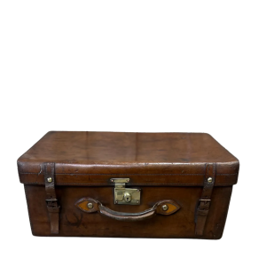
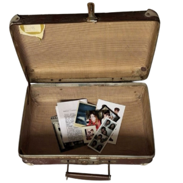
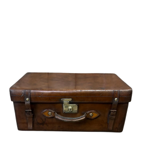
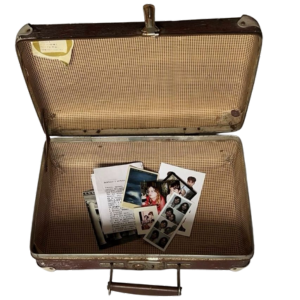

Shelf


Trunk
Shelf


Trunk
You have stumbled accross my little corner of the internet. It's neither strictly professional nor strictly personal, but somewhere in between. Here you will find a jumbled mix of my writing, thoughts, things I find interesting, work I'm proud of, and anything else I wish to keep for reference. Inspired by digital gardens and revival of indie/small/2000s web, I thought I'd try my hand at html and css. I'm very much a beginner so please excuse bugs. Click/tap the objects above to explore what's inside. On my desk are my projects, what I'm working on, a blog and CV. The shelves contain various books and zines I find interesting. Inside the trunk you'll find all sorts of ephemera, collections of trinkets, my knitting, and tarot card collection.
I'm a PhD researcher, urban geographer, and disability rights activist. My research, titled 'Cripping car-free cities: active travel and the everyday mobility of disabled people', examines the relationship between disabled people and everyday urban mobility, looking at how disabled people move around and how streets can be reimagined to facilitate slowness, community, and care. I write and think a lot about cities, walking, and accessible transport.